ภาพอ้างอิงหลักที่ล็อก — ไป๋หลง

ใช้เทียบแนวกรอบ สัดส่วน ฟอนต์ และออร่า แบบเดียวกับชุดแรก
การ์ริก / เคล / มิเรลล์ / ซิลวารา / เอลิรา
กรอบเหลี่ยมทอง · portrait ซ้าย · ฟอนต์ไทยเอียงเล็กน้อย · เน้นออร่า VFX · ชิดขอบบนซ้าย · scale .9 แบบชุดแรก
ใช้เทียบแนวกรอบ สัดส่วน ฟอนต์ และออร่า แบบเดียวกับชุดแรก
คลิปอัดจากเกมจริง แอนิเมชันเล่นตามเวลาปกติ ภาพนิ่งจับหลังคลิกอัลติแล้วหยุด CSS ที่ 400 ms เพื่อเทียบรายละเอียด ไม่ใช่ภาพเกมที่ gen
กรอบชื่อใช้ชื่อเรียกสั้น ส่วนชื่อในข้อมูลเกมและข้อความสำหรับตัวอ่านหน้าจอยังคงชื่อเต็ม
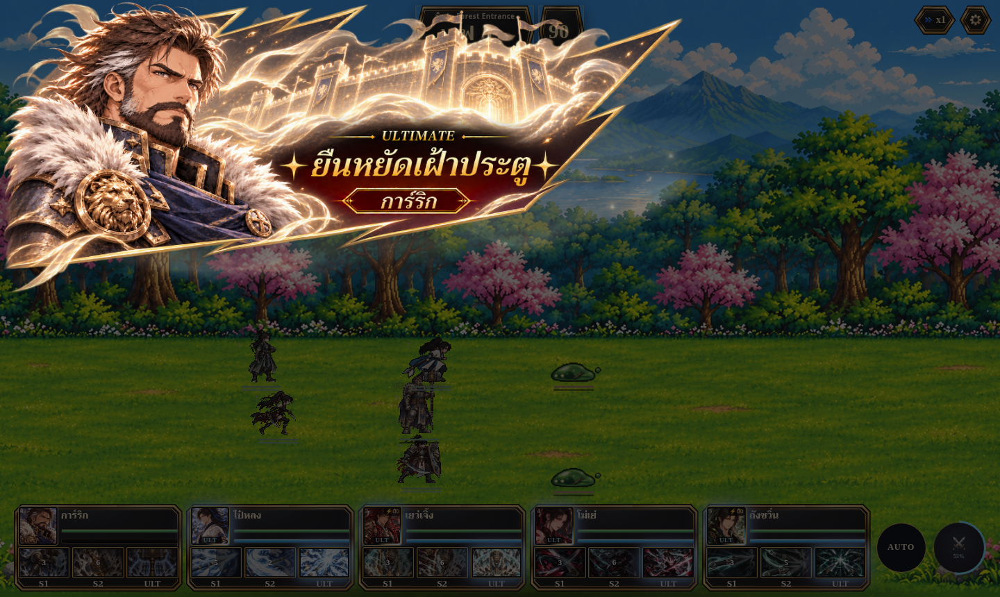

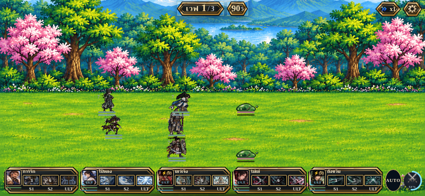
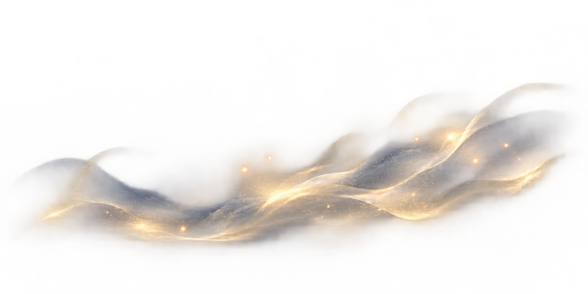
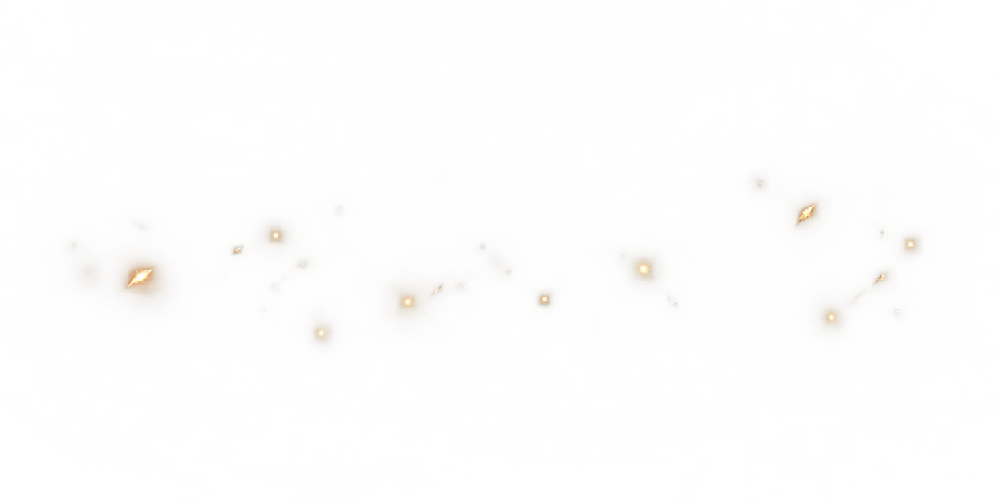
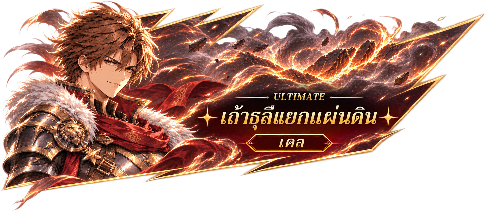
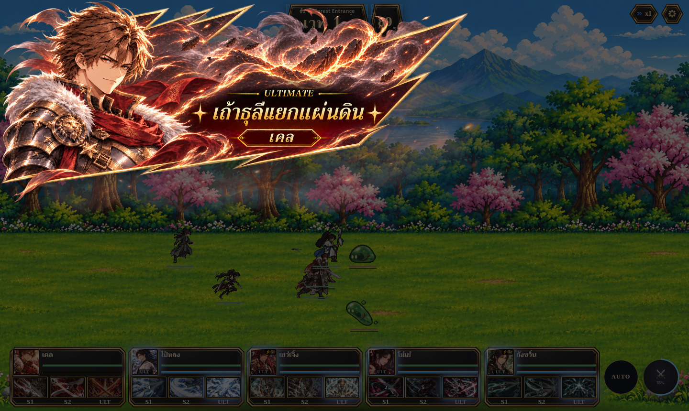

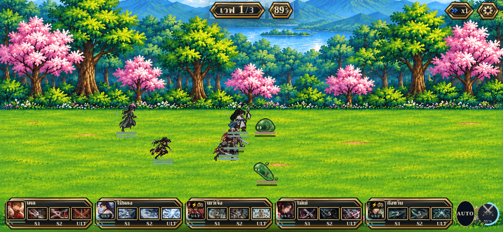
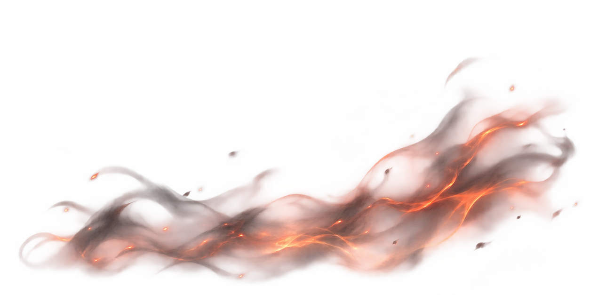
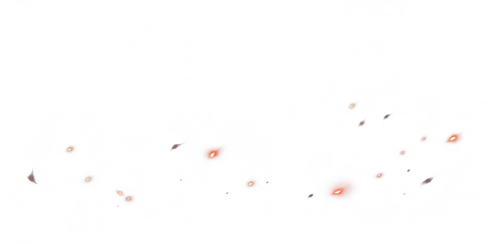
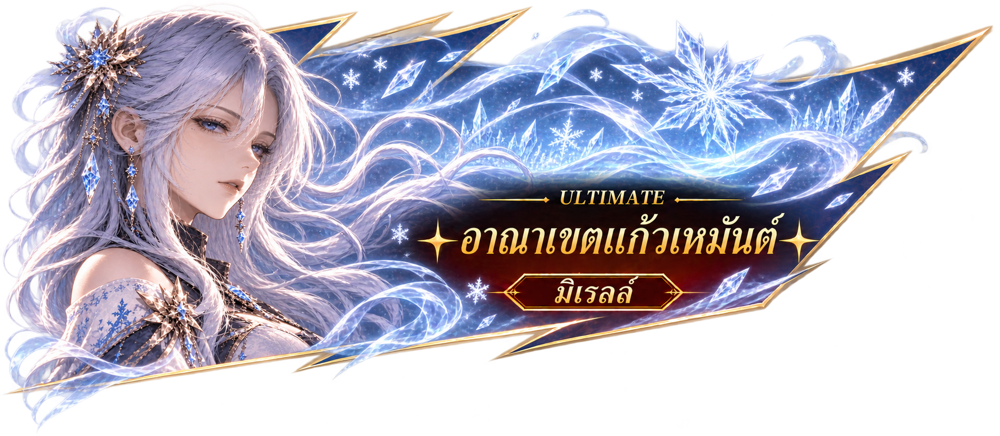

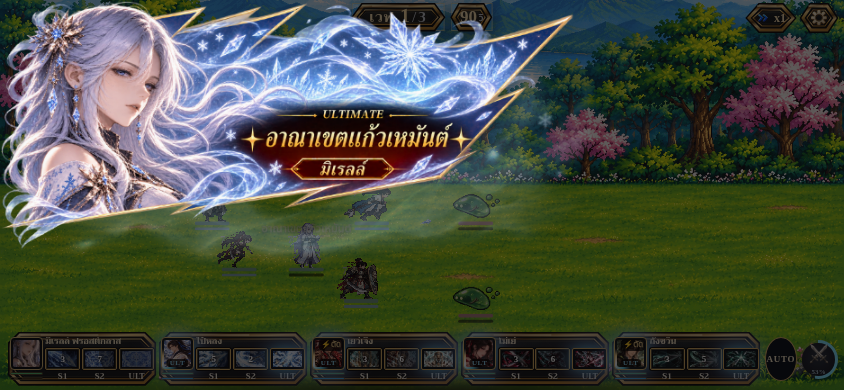
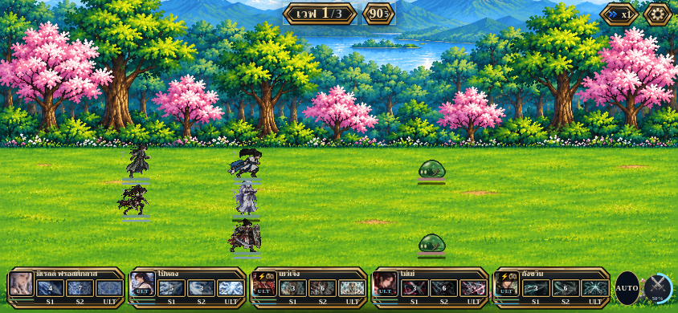
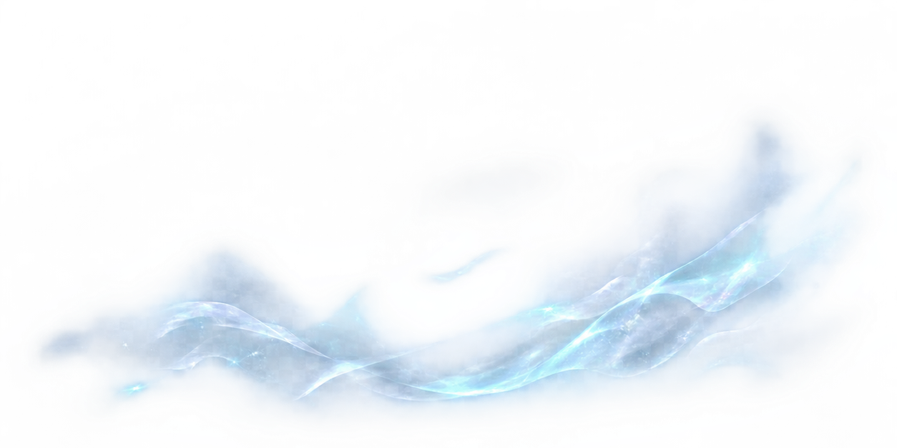
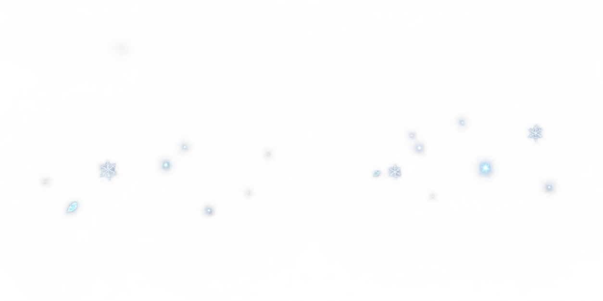
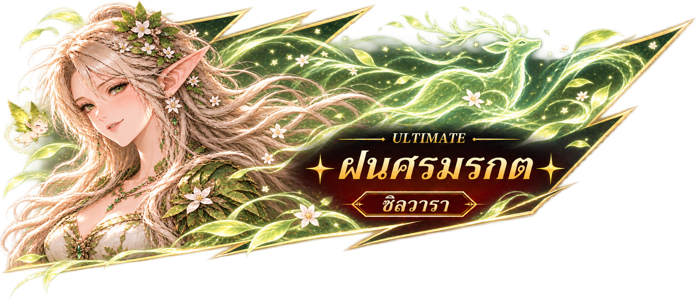


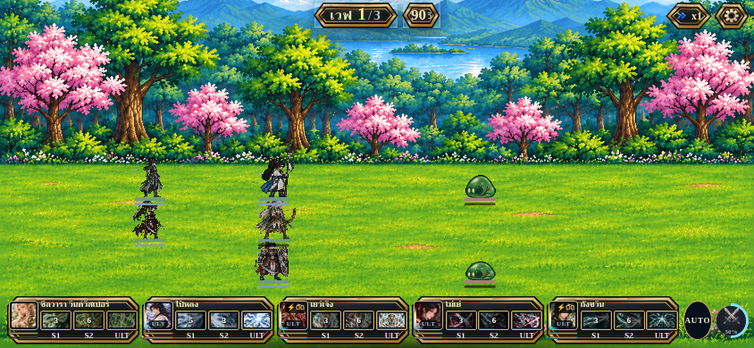
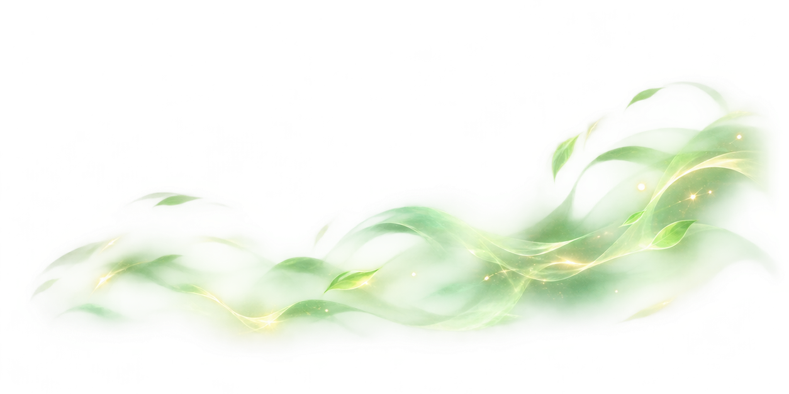
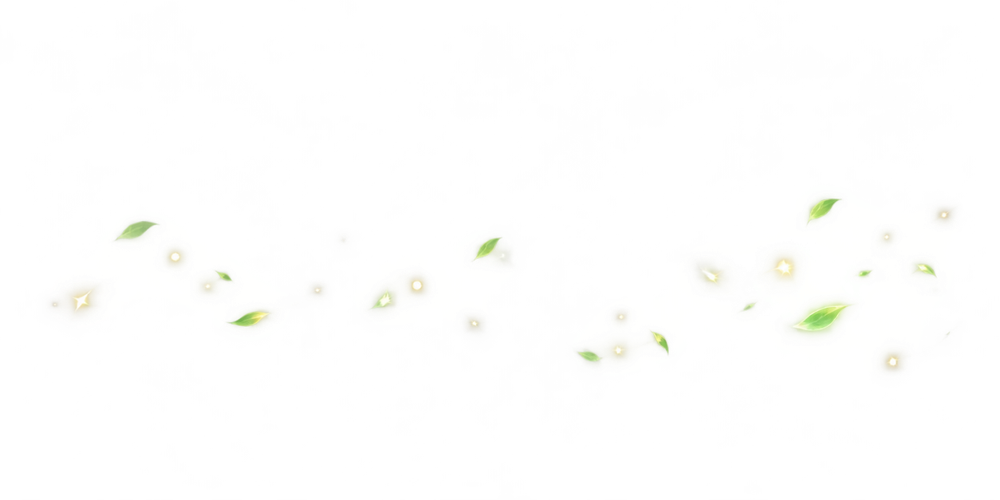
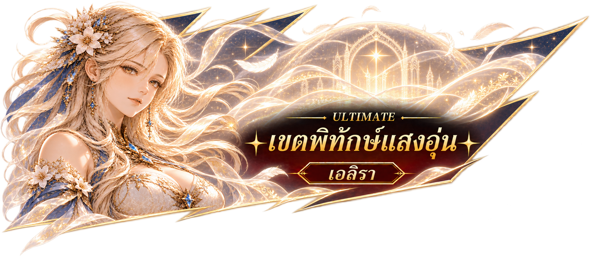
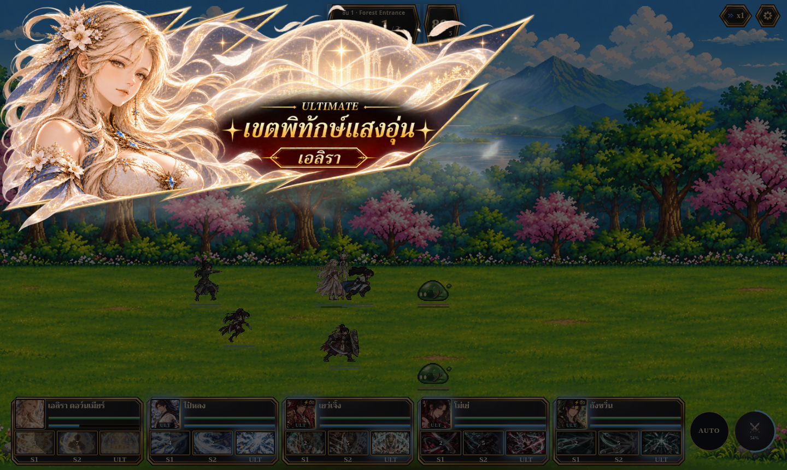

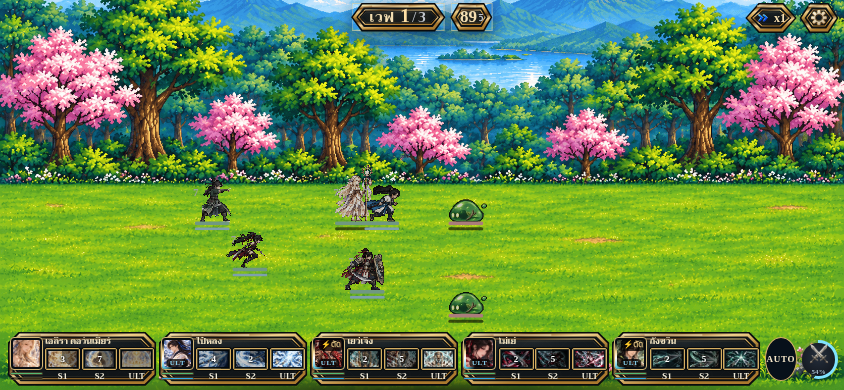
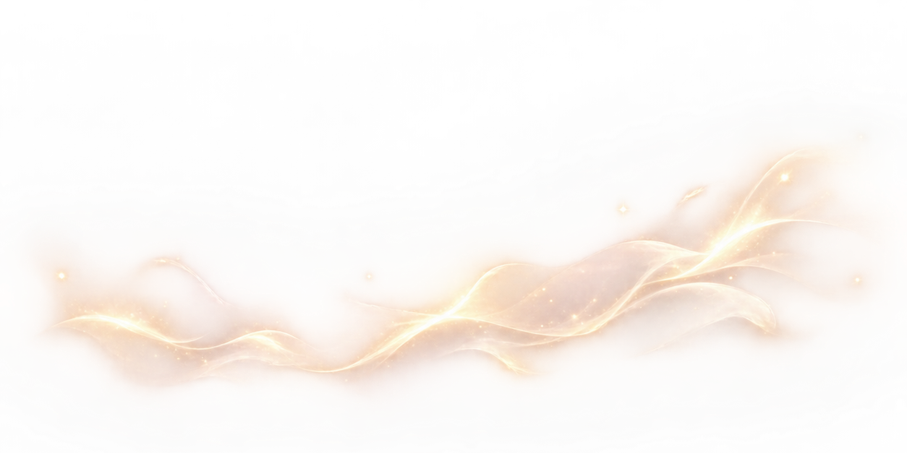
